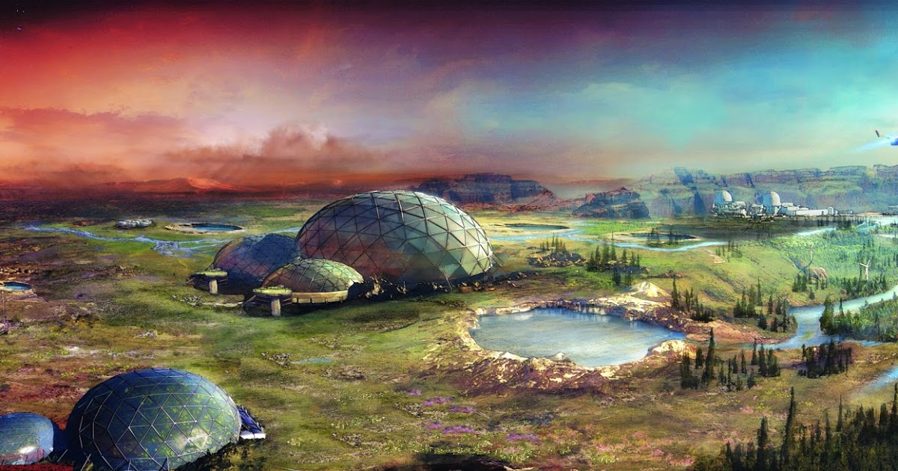

Colony 1: Mars
One of the greatest feats of human ingenuity and geological engineering of the 21st century: Mars. Colony 1 has been a massive success over recent decades. The first settlers paved the way for tourists like you to enjoy the newly thriving Mars landscape. Just 10 years ago you would not have been able to enjoy the surface without life-support equipment. Now, the environment has been improved to where just about anyone can explore with incredible ease and comfort. Come to Colony 1 to find great entertainment.